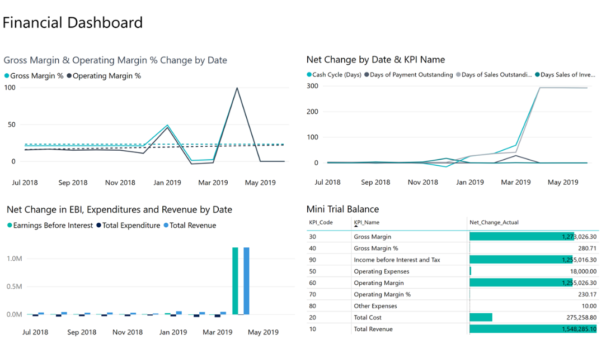

Business Central-Apps in Power BI verwenden
GILT FÜR: Dynamics 365 Business Central online
Dynamics 365 Business Central veröffentlicht die folgenden Power BI-Apps, die detaillierte Dashboards zum Anzeigen von Daten bereitstellen:
- Dynamics 365 Business Central – CRM
- Dynamics 365 Business Central – Finance
- Dynamics 365 Business Central – Sales
Matrix
Jede App enthält mehrere Berichte, die Sie nach Daten durchsuchen können, einschließlich der folgenden Funktionen:
- Wählen Sie eine Darstellung im Dashboard, um einen der Berichte anzuzeigen.
- Filtern Sie den Bericht oder fügen Sie Felder hinzu, die Sie überwachen möchten.
- Heften Sie eine benutzerdefinierte Ansicht an das Dashboard an, um sie weiter zu verfolgen.
Sie können Daten auch manuell aktualisieren, und Sie können einen Aktualisierungsplan einrichten. Weitere Informationen finden Sie unter Konfigurieren der geplanten Aktualisierung.
Die Apps sind so konzipiert, dass sie mit Daten aller Unternehmen in Business Central arbeiten. Bei der Installation der Power BI App geben Sie einen oder mehrere Parameter an, um eine Verbindung zu Ihrem Business Central herzustellen.
Hinweis
Sie können auch Ihre eigenen Berichte und Dashboards in Power BI auf Grundlage Ihrer Daten in Business Central erstellen. Weitere Informationen finden Sie unter Verbindung Ihrer Geschäftsdaten mit Power BI.
Voraussetzungen
Power BI-Apps erfordern Berechtigungen für die Tabellen, aus denen Daten abgerufen werden, und für die Webdienste, die zum Abrufen von Daten verwendet werden. In der folgenden Tabelle sind die erforderlichen Webdienste für jede einzelne Power BI-App aufgeführt:
| App | Webdienste |
|---|---|
| Business Central – CRM |
|
| Business Central – Finanzen |
|
| Business Central – Sales |
|
Tipp
Eine einfache Methode, die Webdienste zu finden ist, in Webdiensten in Business Central zu suchen. Auf der Seite Webdienst stellen Sie sicher, dass das Feld Veröffentlichen für die oben aufgeführten Webdienste ausgewählt ist. Weitere Informationen finden Sie unter Webdienst veröffentlichen.
Vorbereitung
Registrieren Sie sich für den Power BI-Dienst. Wenn Sie sich noch nicht registriert haben, wechseln Sie zu https://powerbi.microsoft.com. Verwenden Sie bei der Registrierung Ihre geschäftliche E-Mail-Adresse und Ihr Kennwort.
Eine Business Central-App in Power BI installieren
- Öffnen Sie Ihren Browser, navigieren Sie zu https://powerbi.microsoft.com und melden Sie sich bei Ihrem Konto an.
Wählen Sie im Navigationsbereich Apps.
Die Apps Seite wird angezeigt.
Wählen Sie auf der Seite Apps in der oberen rechten Ecke der Seite die Option Apps abrufen aus.
Die Seite Power BI Apps wird geöffnet, auf der Sie nach den Apps suchen können, die für Business Central verfügbar sind.
Tipp
Sie können auch auf den Power BI-Bericht aus Business Central zugreifen. Navigieren Sie zum Abschnitt Power BI-Berichte und Wählen Sie Berichte auf Ihrer Startseite. Wählen Sie entweder Services oder Meine Organisation aus Berichte abrufen. Die Organisationsgalerie in Power BI oder in Microsoft AppSource wird geöffnet, sodass nur Apps angezeigt werden, die sich auf Business Central beziehen.
- Geben Sie im Feld Suchen den Text Dynamics 365 Business Central ein.
Wählen Sie die App aus, die Sie verwenden möchten, und wählen Sie Jetzt abrufen aus. Wählen Sie dann Installieren aus.
Anschließend ist die App unter Apps im Navigationsmenü von Power BI verfügbar.
Business Central-App mit Ihren Daten verbinden
- Wählen Sie unter Apps zuerst die Business Central-App und dann Verbinden aus.
Wenn Sie dazu aufgefordert werden, geben Sie unter Unternehmensname und Umgebung Informationen zur Business Central-Instanz ein, zu der Sie eine Verbindung herstellen möchten.
- Stellen Sie sicher, dass Sie unter Unternehmensname den vollständigen Namen und nicht den Anzeigenamen verwenden. Sie finden den Unternehmensnamen auf der Seite Unternehmen in Business Central.
- Falls Sie nicht mehrere Umgebungen erstellt haben, wählen Sie für Umgebung die Option Produktion aus.
Wählen Sie Weiter aus.
- Wählen Sie Anmelden aus.
- Wenn Sie dazu aufgefordert werden, geben Sie den Benutzernamen und das Kennwort für die Anmeldung bei Business Central ein.
Sobald die Verbindung hergestellt ist, werden ein Dashboard und Berichte zu Ihrem Power BI Arbeitsplatz hinzugefügt. Wenn abgeschlossen, werden die Kacheln die Daten aus Ihrem Business Central-Unternehmen anzeigen.

Probleme beheben
Das Power BI-Dashboard basiert auf den veröffentlichten Webdiensten, die oben aufgeführt sind. Es zeigt Daten des Demounternehmens oder Ihres eigenen Unternehmens an, wenn Sie Daten aus Ihrer aktuellen Finanzlösung importieren. Wenn etwas schief geht, stellt dieser Abschnitt eine Problemumgehung für die häufigsten Probleme bereit.
Kein Power BI-Konto vorhanden
Es wurde kein Power BI-Konto eingerichtet. Für ein gültiges Power BI-Konto benötigen Sie eine Lizenz. Außerdem müssen Sie sich zuvor bei Power BI angemeldet haben, um Ihren Power BI-Arbeitsbereich zu erstellen.
Nachricht: Es sind keine Berichte aktiviert. Wählen Sie den Bericht aus, um eine Liste der anzeigbaren Berichte anzuzeigen.
Diese Meldung wird angezeigt, wenn der Standardbericht nicht in Ihrem Power BI-Arbeitsbereich bereitgestellt werden konnte. Oder der Bericht wurde bereitgestellt, aber nicht erfolgreich aktualisiert. Bei diesem Problem navigieren Sie zum Bericht in Ihrem Power BI-Arbeitsbereich und wählen dort Datensatz, Einstellungen aus. Anschließend aktualisieren Sie die Anmeldedaten manuell. Wenn der Datensatz erfolgreich aktualisiert wurde, navigieren Sie zurück zu Business Central und wählen Sie den Bericht auf der Seite Berichte auswählen manuell aus.
Sie brauchen eine Power BI Pro Lizenz zur Installation der Business Central App in Power BI
Sie benötigen eine Power BI Pro-Lizenz, um Ihre Inhalte teilen zu können. Selbiges gilt für die Personen, mit denen Sie Ihre Inhalte teilen möchten. Der Inhalt muss sich in einem Arbeitsbereich in einer Premium-Kapazität befinden. Weitere Informationen finden Sie unter Möglichkeiten zur gemeinsamen Nutzung Ihrer Arbeit in Power BI.
Parameterprüfung fehlgeschlagen. Prüfen Sie, ob alle Parameter gültig sind.
Dieser Fehler zeigt an, dass einer oder mehrere der Parameter ungültig sind.
- Der angegebene Umgebungsparameter entspricht keiner vorhandenen Produktions- oder -Sandbox-Umgebung von Business Central.
- Der angegebene Unternehmensparameter stimmt mit keinem bestehenden Unternehmen in Business Central überein. Überprüfen Sie den Unternehmensnamen auf der Seite Unternehmen unter Business Central.
- Falls eine Verbindung mit Business Central on-premises hergestellt wurde, haben Sie eine ungültige URL eingegeben. Sie können die URL auf er Seite Webdienst in Business Central überprüfen
- Es ist kein Port geöffnet, über den die Anforderung Ihre Firewall passieren kann.
Anmeldung nicht möglich
Wenn angezeigt wird, dass die Anmeldung fehlgeschlagen ist, nachdem Sie sich mit Ihren Business Central-Benutzeranmeldeinformationen angemeldet haben, dann liegt wahrscheinlich eines der folgenden Probleme vor:
- Das Konto, das Sie verwenden, hat keine Berechtigungen, um die Business Central-Daten aus Ihrem Konto zu lesen. Stellen Sie sicher, dass Sie über Berechtigungen für die erforderlichen Daten in Business Central verfügen und versuche es noch mal.
- Sie haben einen anderen Authentifizierungstyp als „Standard“ ausgewählt, falls Sie eine Verbindung mit Business Central on-premises hergestellt haben.
- Der eingegebene Benutzername oder das Kennwort ist falsch.
Nachricht: Ihre Datenquelle kann nicht aktualisiert werden, da die Anmeldeinformationen ungültig sind. Bitte aktualisieren Sie Ihre Anmeldeinformationen und versuchen Sie es erneut.
Für Business Central on-premises kann das Problem darauf zurückzuführen sein, dass die OData-URL nur für das lokale Netzwerk zugänglich ist.
Ungültiger Unternehmensname
Ein häufiger Fehler ist, den Unternehmensanzeigenamen anstelle des Unternehmensnamens einzugeben. Unternehmensnamensuche für Unternehmen zu suchen. Verwenden Sie das Feld Name, wenn Sie den Unternehmensnamen eingeben.
Der Schlüssel glich keinen Zeilen in der Tabelle
Wenn Sie einen nicht gültigen Unternehmensnamen während des Verbindungsvorgangs eingeben, erhalten Sie möglicherweise die Fehlermeldung, "der Schlüssel entsprach keinen Zeilen in der Tabelle". Geben Sie den korrekten Unternehmensnamen an und versuchen Sie die Verbindung erneut.
Historische Daten scheinen zu fehlen
Sobald die Power BI-App installiert ist und Ihre Daten in Power BI angezeigt werden, stellen Sie möglicherweise fest, dass nicht alle Ihre Daten angezeigt werden. Die Datensätze werden so gefiltert, dass nur die Daten der letzten 365 Tage zurückgegeben werden. Diese Standardeinstellung dient dazu, die Berichte zu beschleunigen.
Ich sehe nur Daten für ein einzelnes Unternehmen
Die Power BI App zeigt nur Daten vom Business Central Unternehmen an, das definiert wurde, als die Power BI App installiert wurde. Daten von zusätzlichen Unternehmen können zu den Berichten hinzugefügt werden, indem neue Abfragen hinzugefügt werden, die andere Unternehmen als Datenquelle verwenden.
Was jetzt?
- Versuchen Sie im Erstellen eine Frage im Q&A-Feld im oberen Bereich des Dashboards.
- Ändern Sie die Kacheln im Dashboard.
- Wählen Sie eine Kachel aus, um den zu Grunde liegenden Bericht zu öffnen.
- Standardmäßig ist für Ihren Datenbestand keine Aktualisierung geplant. Sie können den Aktualisierungszeitplan ändern oder versuchen, ihn bei Bedarf mithilfe von Jetzt aktualisieren zu aktualisieren. Weitere Informationen finden Sie unter Konfigurieren der geplanten Aktualisierung.
Siehe auch
Business Central und Power BI
Übersicht über die Power BI-Integrationskomponente und -Architektur für Business Central
Von der lokalen Business Central-Version eine Verbindung mit Power BI herstellen
Power BI-Berichte erstellen zur Anzeige von Dynamics 365 Business Central-Daten
Business Intelligence
Bereiten Sie sich auf das Geschäft vor
Importieren von Geschäftsdaten aus anderen Finanzsystemen
Business Central einrichten
Business Central als Power BI-Datenquelle verwenden
Business Central als Power Apps-Datenquelle verwenden
Business Central in Power Automate verwenden
Power BI Dokumentation
Was ist Power BI?
Schnellstart: Stellen Sie eine Verbindung zu Daten her in Power BI Desktop
Einführung in Datamarts
Einführung in Datenflows und Self-Service-Datenvorbereitung
Kostenlose E-Learning-Module für Business Central finden Sie hier